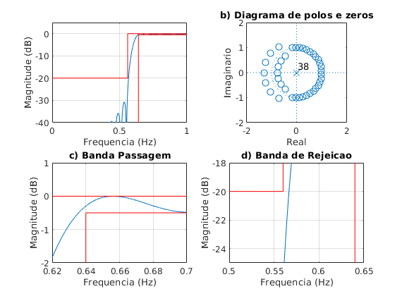
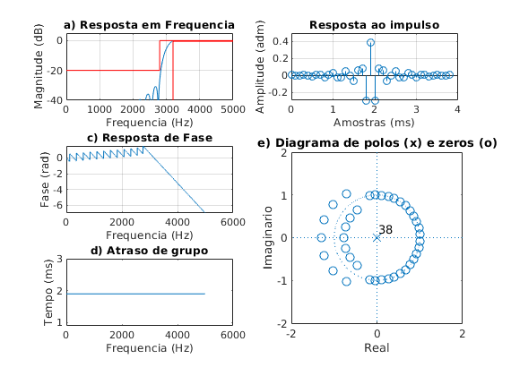

Contents
close all;
clear all;
clc;
ExecutarAjuste = 1;
Especificacoes
fa = 10000; fs = 2800; fp = 3200;
Ap = 0.5; As = 20; GdB = 0;
wp = fp/fa*(2*pi); ws = fs/fa*(2*pi);
wc1 = sqrt(wp*ws);
Dw1 = wp - ws;
G0 = GdB;
Projeto inicial
Dw = Dw1;
wc = wc1;
Ask = As;
if ExecutarAjuste
Ask = Ask + 9;
end
betha = 0.5842*(Ask-21)^0.4 + 0.07886*(Ask-21);
M1 = ceil((Ask - 8)/(2.285*Dw)+1);
M = M1;
if ExecutarAjuste
G0 = 0.295;
wp2 = 0.6196*pi; ws2 = 0.5813*pi;
Dw2 = wp2 -ws2;
M2 = ceil(M1*Dw2/Dw1);
M = M2;
wc2 = wc1 - ((0.0037+0.0013)/2)*pi;
wc = wc2;
end
N = 2*M+1;
betha = 0.5842*(Ask-21)^0.4 + 0.07886*(Ask-21);
wk = kaiser(N, betha)';
k = 1:M;
bi = -sin(wc*k)./(pi*k);
b0 = 1-wc/pi;
b = [flip(bi) b0 bi];
b = b.*wk*10^(-G0/20);
figure(1)
subplot(221)
title('a) Resposta em frequencia')
[h, w] = freqz(b, 1, linspace(0,pi,100000));
plot(w/pi, 20*log10(abs(h))); grid on;
ylim([-40 5])
hold on;
plot([pi,wp,wp]/pi,[-Ap,-Ap,-80], '-red')
plot([0,ws/pi,ws/pi,1],[-As,-As,0,0], '-red')
xlabel('Frequencia (Hz)');
ylabel('Magnitude (dB)');
subplot(222)
zplane(b, 1); axis([-2 2 -2 2]);
title('b) Diagrama de polos e zeros')
xlabel('Real');
ylabel('Imaginario');
subplot(223)
plot(w/pi, 20*log10(abs(h)));
title('c) Banda Passagem')
grid on; hold on;
plot([pi,wp,wp]/pi,[-Ap,-Ap,-80], '-red')
plot([0,ws/pi,ws/pi,1],[-As,-As,0,0], '-red')
xlim([0.62 0.7]); ylim([-2 1]);
xlabel('Frequencia (Hz)');
ylabel('Magnitude (dB)');
subplot(224)
plot(w/pi, 20*log10(abs(h)));
title('d) Banda de Rejeicao')
grid on; hold on;
plot([pi,wp,wp]/pi,[-Ap,-Ap,-80], '-red')
plot([0,ws/pi,ws/pi,1],[-As,-As,0,0], '-red')
xlim([0.5 0.65]); ylim([-25 -18]);
xlabel('Frequencia (Hz)');
ylabel('Magnitude (dB)');

figure(2)
escala = fa/2;
subplot(3,2,[4 6])
zplane(b, 1);
axis([-2 2 -2 2])
title('e) Diagrama de polos (x) e zeros (o)')
xlabel('Real');
ylabel('Imaginario');
clear h w
[h, w] = freqz(b, 1, 'whole');
subplot(322)
x_imp = [0:length(b)-1]/fa*1000;
stem(x_imp, b); grid on;
title('Resposta ao impulso')
xlabel('Amostras (ms)');
ylabel('Amplitude (adm)');
subplot(321)
[h, w] = freqz(b, 1, linspace(0,pi,10000));
plot(w/pi*escala, 20*log10(abs(h))); grid on;
hold on;
title('a) Resposta em Frequencia')
ylim([-40 5])
Amin = 80;
plot([0,fs,fs,fa/2],[-As,-As,0,0], 'r')
plot([fa/2,fp,fp,],[-Ap,-Ap,-80], 'r')
xlim([0 fa/2])
xlabel('Frequencia (Hz)');
ylabel('Magnitude (dB)');
subplot(323)
plot(w/pi*escala, unwrap(angle(h))/pi); grid on;
title('c) Resposta de Fase')
xlabel('Frequencia (Hz)');
ylabel('Fase (rad)');
subplot(325)
[del_y, del_x] = grpdelay(b, 1);
plot(del_x/pi*fa/2, del_y/fa*1000);
title('d) Atraso de grupo')
xlabel('Frequencia (Hz)');
ylabel('Tempo (ms)');
